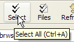

General Options
Tools > Options > General


|
General Options Tools > Options > General |
|
|
These options control some of the general features of Beyond Compare. To customize the Home view: Enable Include session management to expose a tabbed session settings control on the Home view. Set the maximum number of auto-saved sessions to store. Once this limit is passed, the oldest auto-saved sessions will be automatically deleted. Enter zero (0) to disable the auto-save sessions feature. Interface options: Edit these options to show Large buttons with text labels on the toolbars, to Show hints for toolbar buttons, etc. or to Show keyboard shortcut in hints. Here is what a toolbar looks like when all of these options are enabled:  The ESC key closes file views option applies to all file view types, such as Text Compare, Data Compare and Picture Compare. It does not affect folder views. Shared Sessions: Specify a Shared sessions file. Shared sessions will appear in your session tree. You can use but not modify them. Use Tools > Export Settings to create a shared sessions file. Available session types: This list controls which session types are offered for new sessions. Unmark the types of sessions that you don't want to use, in order to simplify the user interface. Saved sessions of a disabled type will still appear and function normally. The list will also show any BC2-style plug-ins that have been installed. To install a plug-in, copy the .bcp file to Beyond Compare's program folder. Then select Tools > File Formats
|